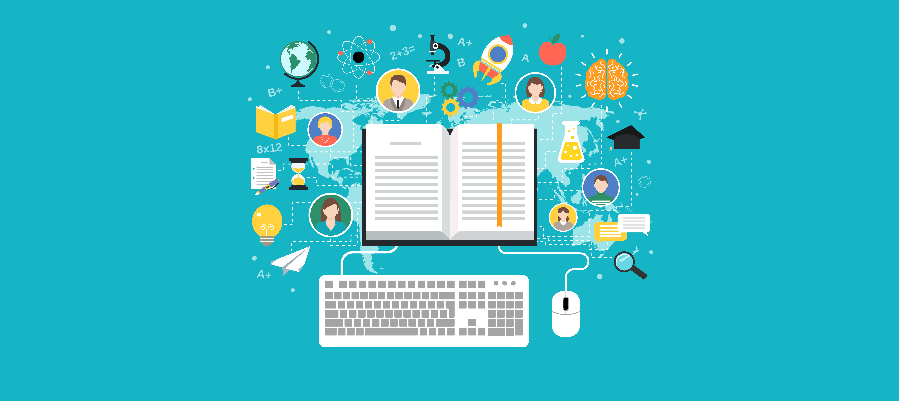

CARACTERISTICAS
Aquí están algunas de las características principales de las Tecnologías de la Información y Comunicación (TIC):
Interconexión: Las TIC permiten la interconexión de personas, dispositivos y sistemas a través de redes de comunicación, como Internet. Esto posibilita la transferencia de datos e información de forma rápida y eficiente.
Digitalización: Las TIC trabajan con datos y contenido en formato digital, lo que facilita su manipulación, almacenamiento y transmisión mediante dispositivos electrónicos. La digitalización también permite la convergencia de diferentes tipos de medios, como texto, imágenes, audio y video, en un solo formato.
Acceso y disponibilidad: Las TIC brindan acceso a la información y los recursos en cualquier momento y lugar, siempre que se tenga conexión a Internet. Esto proporciona una gran flexibilidad y facilidad de acceso a la información y los servicios.
Automatización y eficiencia: Las TIC permiten la automatización de procesos y tareas, lo que mejora la eficiencia y la productividad. Los sistemas informáticos pueden realizar tareas repetitivas de manera más rápida y precisa que los seres humanos, lo que libera tiempo para realizar actividades más complejas.
Comunicación instantánea: Las TIC facilitan la comunicación instantánea a través de diversos medios, como correos electrónicos, mensajería instantánea, videoconferencias y redes sociales. Esto permite la comunicación en tiempo real, sin importar la ubicación geográfica de los participantes.
Almacenamiento y gestión de información: Las TIC proporcionan capacidad de almacenamiento y herramientas de gestión de información, lo que facilita el almacenamiento, organización y búsqueda de datos. Los sistemas de gestión de bases de datos y los sistemas de almacenamiento en la nube son ejemplos de herramientas utilizadas para gestionar grandes volúmenes de información.
Personalización y adaptabilidad: Las TIC permiten adaptar y personalizar la información y los servicios de acuerdo con las necesidades individuales. Los sistemas informáticos pueden recopilar y analizar datos para ofrecer recomendaciones y experiencias personalizadas.
Innovación continua: Las TIC están en constante evolución y ofrecen continuamente nuevas herramientas, aplicaciones y soluciones tecnológicas. Esto fomenta la innovación en diferentes campos y promueve el desarrollo de nuevas formas de hacer las cosas.
Estas son solo algunas de las características clave de las Tecnologías de la Información y Comunicación. Su constante avance y desarrollo continúan impulsando cambios significativos en nuestra sociedad y en la forma en que interactuamos y accedemos a la información.
